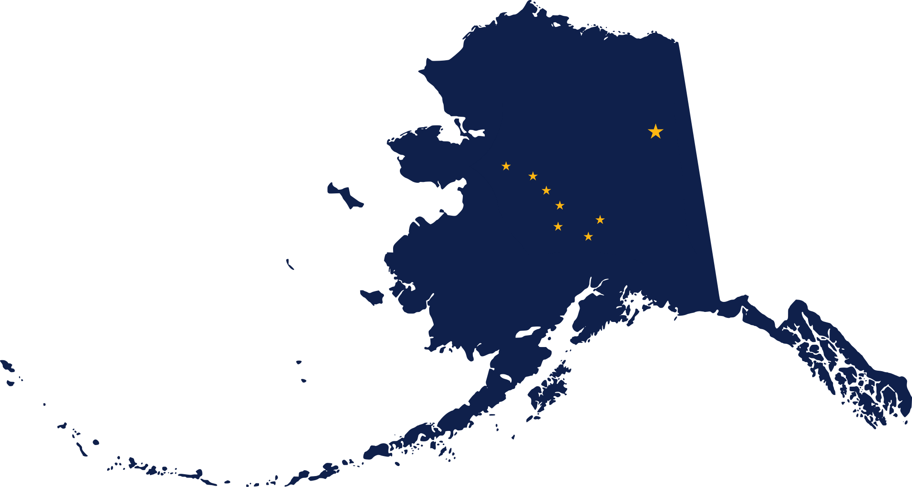

Hello, everyone!
About Me:
Hello, my name is Matthew Cunkelman and this is my website v2.
I originally set out to build and host a site when I was working in the Oil and Gas industry.
I was curious to see what I could learn and figure out on my own.
I started by researching and then building a computer with Linux Ubuntu operating system.
After I had built a computer I wanted to know what else I could do, so I started looking into network configurations and converting this computer into a server.
The more time I spent working on my computer and exploring
(I have a Ubuntu install USB on my keychain because I had to wipe and start over so many times) the more I wanted to try.
Knowing that anything I did I could undo
(since this wan't my main or work computer, it had no critical files),
encouraged me to try anything I wanted.
Eventually I figured out how to host a live website, and I built a very simple site for myself.
I managed to build the skills to change careers, and I am now an Autonomous Systems Engineer for Uber ATG.
My site sat untouched for a while, while I pursued other learning opportunities.
But now with some help (From Stephen Mann Visit his site here ) I am rebuilding it to better showcase me, and the things I am passionate about.
I am building out tabs for me, my career, my travel (and places I still want to travel) as well as some of my favorite recipes
(I love to cook).
Take a look around, and feel free to reach out if you have questions.
I am utilizing GitHub to build this site and remotely push updates to my server, I also use Atom.io as my text editor.
I do self host, so occasionally there will be some outages, but I try to limit them to a few minutes here and there.
![[Welcoming Pic]](./images/me_iceland.png)
Major Recent Changes
- This is a complete overhaul of the site
Updates in the Future
- I want to rebuild my travel site
- I need to figure out how I want to host my recipes
Biography
I am an engineer with over 8 years of professional experience between Autonomous Vehicles and the Oil and Gas industry.
I have spent the majority of my career in the oil and gas industry,
working as a Petroleum Engineer after obtaining a degree in Mechanical Engineering.
After 7 years as a Petroleum Engineer, I transitioned again to being an Autonomous Systems Engineer for UBER ATG.
Both transitions required adapting my existing skills as well as learning new ones.
Creating v1 of this site, was a part of teaching myself some of those new skills.
Throughout my career I have learned many new skills,
some were directly necessary for my day to day tasks, while others branched far outside my roles expectations.
I have had the privilege of working with a lot of unique people, with unique backgrounds and skill sets.
I have tried to take advantage of this when I can, to learn as much as possible, and it has made me a more well rounded and resourceful person.
| About Me | |
|---|---|
| Matthew J. Cunkelman | |
| Penn State University – University Park | |
| Class of 2012 | |
| B.S. in Mechanical Engineering | |
| Community College of Allegheny County | |
| Persuing an A.S. in Software Development | |
| Located in Pittsburgh, PA | |
| +1 (724) 549-2382 | |
| cunkelman.matthew@gmail.com | |
| www.linkedin.com/in /mcunkelman |
| Quick Skills | |
|---|---|
| Mechanical/Petroleum/Autonomous Systems Engineering | |
| Computer Hardware | |
| Coding | |
| Networking | |
| Google Suite | |
| Critical Thinking and Problem Solving | |
| System Requirements Development | |
| Cross Team Collaboration | |
| Leader / Mentor / Team Member / Independent Worker | |
| Open to New Things and Adaptable to New Industries |
| Quick Skills | |
|---|---|
| Technical Writing | |
| Computer-Aided Design (CAD) | |
| Coding | |
| Nuclear / Mechanical / Petroleum Engineering | |
| Microsoft Windows and Office Products | |
| Critical Thinking and Problem Solving | |
| Excellent Communication | |
| Continuous Improvement | |
| Leader / Mentor / Team Member / Independent Worker | |
| Open to New Things and Adaptable to New Industries |
*Check out my Career tab to see a detailed version of my résumé and more professional information about me.
Engineer with 8+ Years of Experience
UBER ATG
Autonomous Systems Engineer
![[UBER ATG]](./Site_Files/company_logos/uber_black.png)
| Autonomous Systems Engineer | April 14, 2019 – Present |
Engineer
(April 14, 2019 – Present)
EQT Production Co.
Reservoir Optimization Engineer
| Reservoir Optimization Engineer | Sept. 14, 2015 – Jan. 7, 2019 |
Engineer
(Sept. 14, 2015 – Jan. 7, 2019)
Halliburton Energy Services
Technical Professional

| Technical Professional (Engineer) | June 12, 2012 – Aug. 14, 2015 |
Engineer
(June 12, 2012 – Aug. 14, 2015)
*This page is still a work in progress.
Travel
I have been fortunate enough to travel to some really cool places,
and this tab is all about recording those adventures.
Check out the links below for more info on each of my trips.
Alaska 
Summer 2015
![[Alaska Cover Photo]](./images/travel/Alaska/Alaska_Images_large/Matenuska Glacier.png)


.png)


.png)


Iceland ![[Iceland Flag]](./images/flags/Flag-map_of_Iceland.png)
September 2017
![[Iceland Cover Photo]](./images/travel/Iceland/Iceland_Images_large/Svinafellsjokull-01.png)


Australia ![[Australia Flag]](./images/flags/Flag-map_of_Australia.png) / New Zealand
/ New Zealand ![[New Zealand Flag]](./images/flags/Flag_map_of_New_Zealand.png)
/ New Zealand
July 2018


.png)


Wyoming ![[Wyoming Flag]](./images/flags/Flag-map_of_Wyoming.png)
August 2019
![[Wyoming Cover Photo]](./images/travel/Wyoming/Wyoming_Images_large/Tetons_4.png)


Places on my Bucket List:
- Patagonia - South America
- Banff - Canada
- Norway
- Germany/Switzerland/Austria